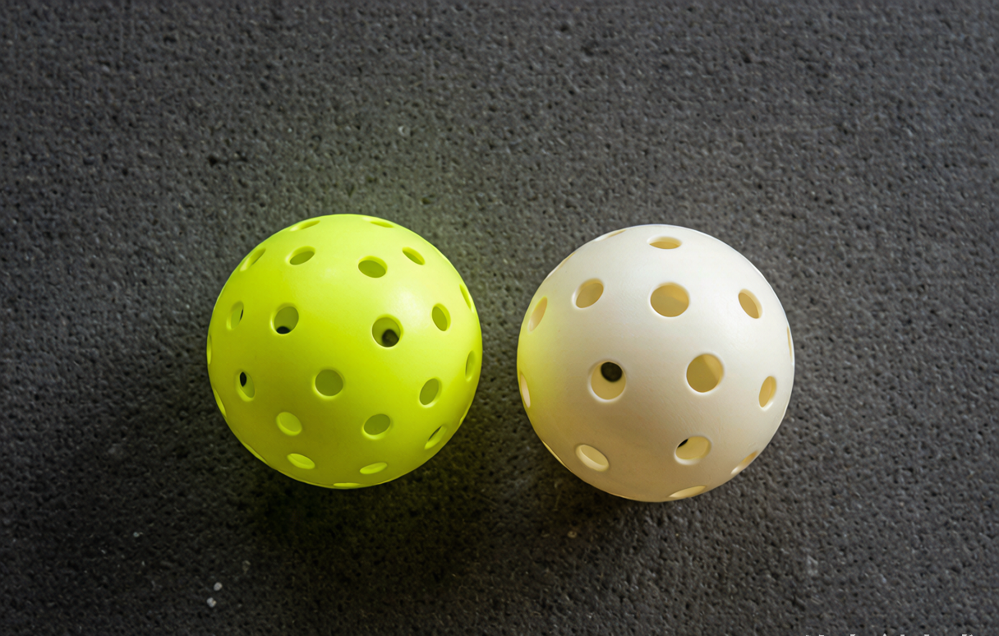

Indoor vs outdoor pickleball balls: which should you use?

You borrowed a paddle, you found a court, and now someone hands you a ball that looks like a wiffle ball's tougher cousin. Here is the thing most newcomers miss: there is no single "pickleball." The ball built for a windy outdoor court is a different animal from the one meant for a quiet gym floor. Pick the wrong one and the game feels off in a way you can't quite name. This guide explains the difference in plain terms so you grab the right ball the first time.
What a pickleball actually is
Every pickleball is a hollow polymer ball with holes punched through it. The size sits close to a baseball, about 2.9 inches across, and a ball weighs somewhere between 0.78 and 0.94 ounces. The holes are the whole story. They control how the ball moves through air, how it bounces, and how it holds up against the surface under your feet.
Outdoor balls
Outdoor balls carry around 40 holes. The holes are small, which keeps the ball from getting knocked around by wind. The plastic is harder and the ball is heavier, so it stands up to rough asphalt and concrete. That toughness comes with a cost: outdoor balls go brittle in cold weather and crack more often, so regular outdoor players keep a few spares in the bag.
The workhorses you will see at rec play are the Franklin X-40, the Dura Fast 40, the Onix Pure 2, and the Selkirk Pro S1. The Franklin X-40 is probably the most common ball at casual open play across the US. The Dura Fast 40 shows up constantly in sanctioned tournaments. If you show up to a public court, odds are good you are playing one of these.
Indoor balls
Indoor balls have about 26 holes, and the holes are noticeably larger. The plastic is softer, which makes the ball quieter and easier to control. Indoor balls last longer because gym floors are forgiving compared to pavement, and they don't face wind. The tradeoff is pace: they move slower and sit up a little more, which suits the tighter spaces of an indoor court.
Common indoor choices are the Onix Fuse Indoor, the Jugs ball, and the Franklin X-26. If your only option is a school gym or a recreation center with a wood floor, an indoor ball is the right call.
Why the hole count differs
It comes down to the environment. Outdoors you fight wind and hard, abrasive surfaces, so you want a heavier ball with many small holes to stay stable. Indoors there is no wind and the floor is smooth, so a softer ball with fewer, larger holes gives you more touch and a longer life. Neither ball is "better." They are built for different rooms.
The approval specs worth knowing
USA Pickleball (the organization formerly called USAPA) sets the standards a ball must meet to be used in sanctioned play. An approved ball needs 26 to 40 holes in one uniform color, a hardness of 40 to 50 on the Durometer D scale at 70°F, and a bounce of 30 to 34 inches when dropped from 78 inches. Notice that the 26-to-40 hole range covers both indoor and outdoor balls, which is why both types can earn approval.
How to choose without overthinking
Match the ball to the roof. Playing outside on asphalt or concrete? Use an outdoor ball. Playing in a gym or rec center? Use an indoor ball. Don't try to make one ball do both jobs. The people who look confused about why their shots keep sailing aren't always missing their swing. Sometimes they are just using the wrong ball for the floor.
Where to get them in the US
Both types are easy to find on Amazon (US storefront) and at PickleballCentral. Buy a six-pack of outdoor balls if you play outside, and a bag of indoor balls if your club is indoors. They are cheap enough that experimenting costs you almost nothing.
The one mistake to avoid is assuming the ball you were handed is right for where you are standing. A thirty-second question to the person running open play, "indoor or outdoor balls here," saves a frustrating hour.
Your next step
The ball matters, but the paddle in your hand matters more. Our matcher scores 20-plus paddles against your level, style, and budget in about 30 seconds, or you can read the full guide to choosing your first paddle first.
If you would rather understand the gear before you pick, start with how to choose your first pickleball paddle. And once you are on the court, our scoring explainer will make the three-number call make sense.
getrallypick may earn a commission from partner links. It never changes our recommendations. See our disclosure.